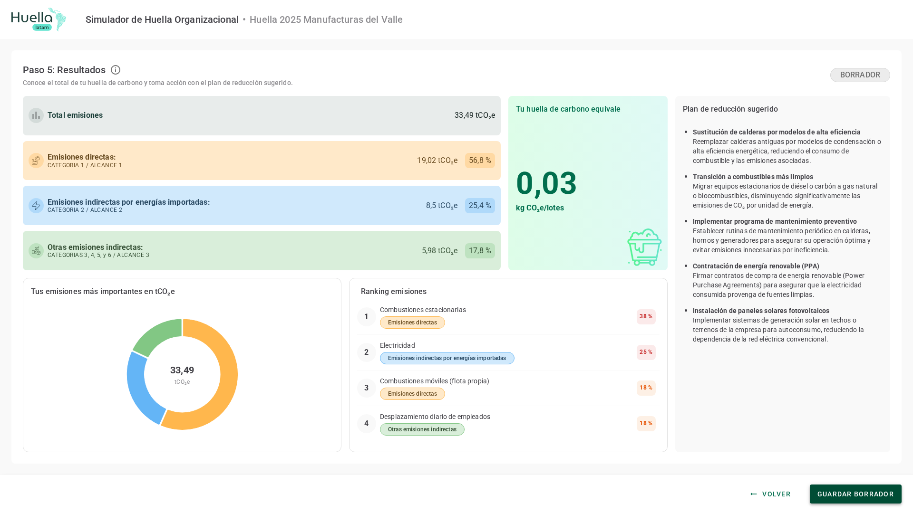
Recorrer los cinco pasos del asistente y obtener el total de tu organización, con cuenta o sin ella.
Saber qué pide cada campo, cómo se elige el factor de emisión y cómo respaldar lo que declaras.
Interpretar el desglose por alcance, revisar los factores aplicados y conservar tu borrador.
Hay dos puertas de entrada al mismo asistente: la portada pública, sin necesidad de cuenta, y tu lista de huellas, con la sesión iniciada. Las dos crean el cálculo y te dejan en el paso 1; desde ahí el recorrido es idéntico.
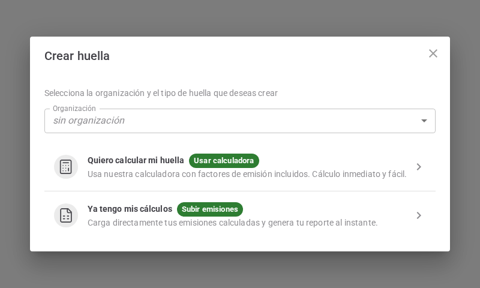
Al crear el cálculo eliges cómo vas a registrar los datos, y esa elección aparece en las dos entradas. Las dos rutas abren el mismo asistente de cinco pasos —el Simulador de Huella Organizacional—; lo que cambia es cuánta libertad tienes al registrar cada dato.
El asistente avanza paso a paso y guarda lo que ingresas al avanzar, al volver y al cambiar de alcance. El botón Volver existe desde el paso 2 y guarda en los pasos 2 y 3; en el paso 3 retrocede primero de alcance. El paso 1 no lo tiene, porque desde ahí se sale con el botón del encabezado.
Este paso define el punto de partida. Los campos con asterisco —año, nombre, rubro y sub-rubro— son obligatorios; además, el rubro y el sub-rubro activan las fuentes recomendadas del paso siguiente.
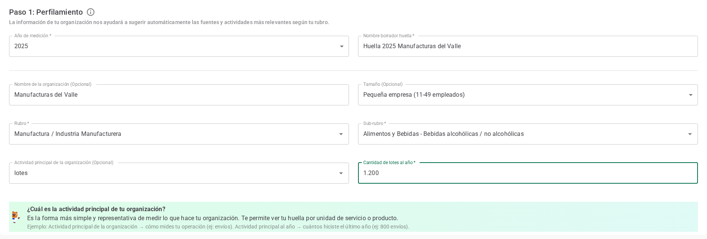
1 2 3 4 5 6 7Aquí ves todas las fuentes de emisión disponibles, agrupadas por alcance. Marca las que apliquen a tu organización y presiona Siguiente. En algunos botones la aplicación las llama subcategorías: es lo mismo.
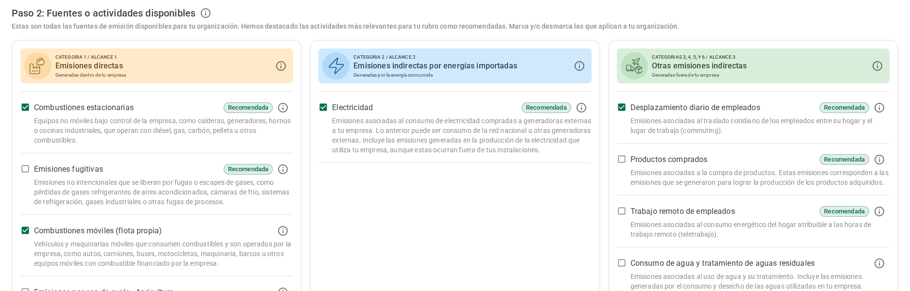
1 2 3 4Cada fuente que marcaste tiene su propia tabla. Tú ingresas la cantidad y el sistema resuelve el factor y las emisiones: 5.000 L × 2,57 kg/L = 12,85 tCO₂e (toneladas de dióxido de carbono equivalente).
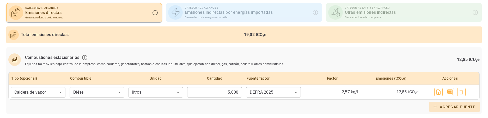
1 2 3 4 5 6 7Cada línea admite respaldo y notas, para que tu cálculo quede documentado.
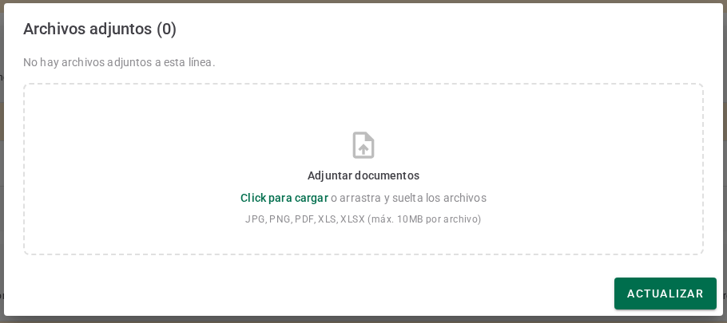
Cuando ya conoces el total de una fuente y no su detalle, puedes registrarlo directamente. La casilla está siempre disponible en la ruta Ya tengo mis cálculos —donde el detalle línea a línea es opcional— y, en la guiada, en las fuentes que no piden variables.
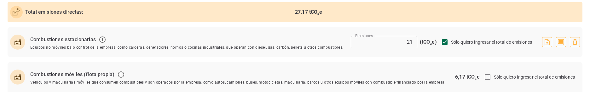
1 2 3 4El resumen reúne todo lo ingresado: la ficha de tu organización, el total y el detalle por fuente con el factor aplicado. Cuando esté correcto, Siguiente abre tus resultados.
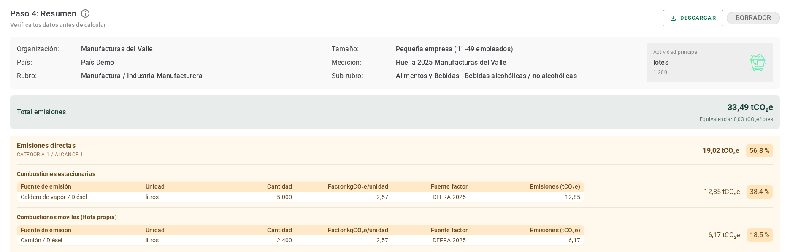
1 2 3 4 5 6Al final del resumen queda la lista de factores utilizados. Es la trazabilidad de cada número: qué valor se aplicó y de dónde viene.
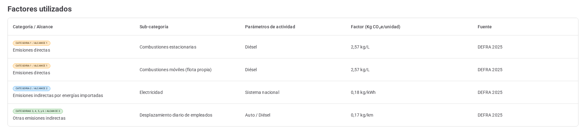
1 2 3 4 5El último paso muestra tu huella total, cómo se reparte y qué hacer con ella. Si quieres una copia, descárgala desde el paso 4 y, una vez guardada, desde tu lista de huellas.
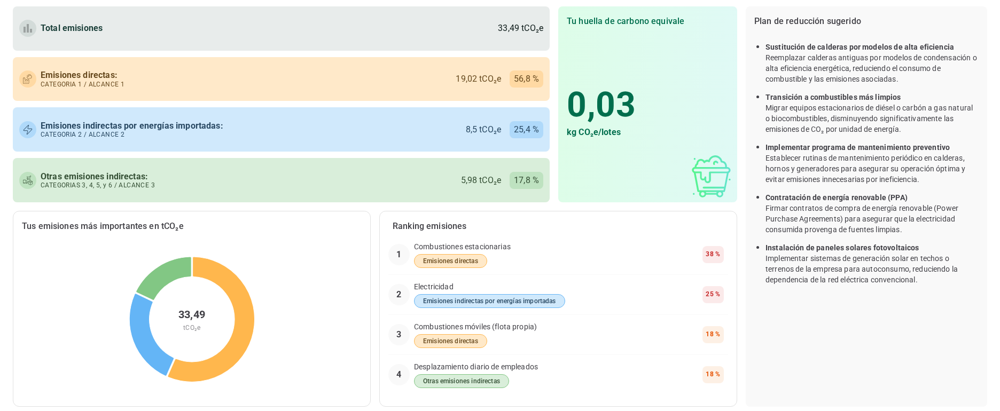
1 2 3 4 5 6Si empezaste sin cuenta, este es el momento de guardar. Al iniciar sesión, el cálculo que acabas de hacer queda asociado a tu perfil.
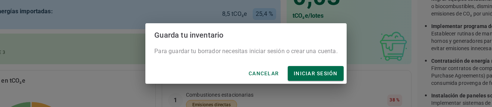
1 2 3